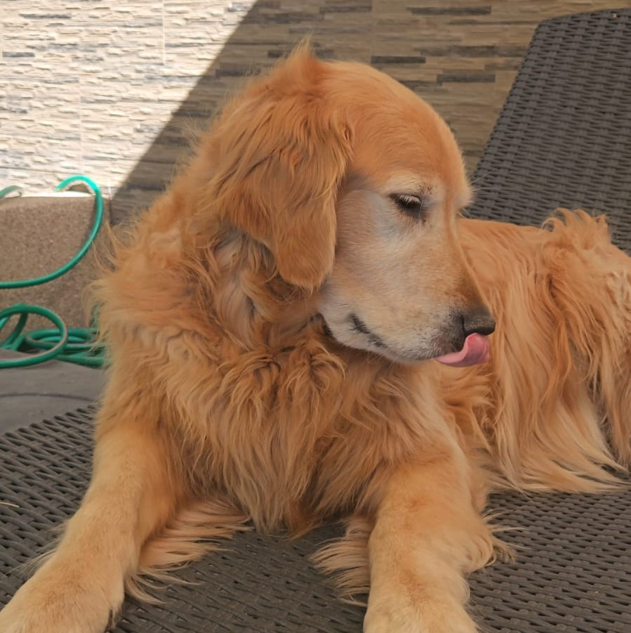

Soy Camila Canales, estudio diseño gráfico en la universidad Diego Portales. Tengo 20 años, estoy de cumpleaños el 03 de octubre, soy libre, soy la mayor de dos hermanos, tengo un perrito golden retriever llamado theo, soy vegetariana desde hace 6 años y por esos años también empezó mi gusto por el gym, ultimamente me he interesado mucho en la serigrafía, la costura y la encuadernación.

Uno de mis sitios preferidos para inpiración es Cosmos